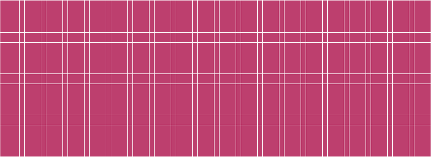

Foundations Overview
The foundations make up the building blocks of our products. A good understanding of our foundations will help your design and strategize how your product is built by addressing it from both a broad and detailed perspective.
